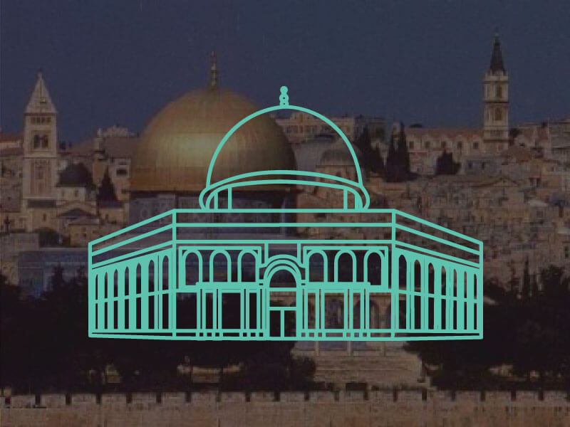

The Dome of the Rock
The Dome of the Rock is an Islamic shrine located on the Temple Mount in the Old City of Jerusalem. The Dome of the Rock is in its core one of the oldest extant works of Islamic architecture.
Its architecture and mosaics were patterned after nearby Byzantine churches and palaces, although its outside appearance has been significantly changed in the Ottoman period and again in the modern period, notably with the addition of the gold-plated roof, in 1959–61 and again in 1993. The octagonal plan of the structure may have been influenced by the Byzantine Church of the Seat of Mary built between 451 and 458 on the road between Jerusalem and Bethlehem.
A UNESCO World Heritage Site, it has been called “Jerusalem’s most recognizable landmark,” along with two nearby Old City structures, the Western Wall, and the "Resurrection Rotunda" in the Church of the Holy Sepulchre.